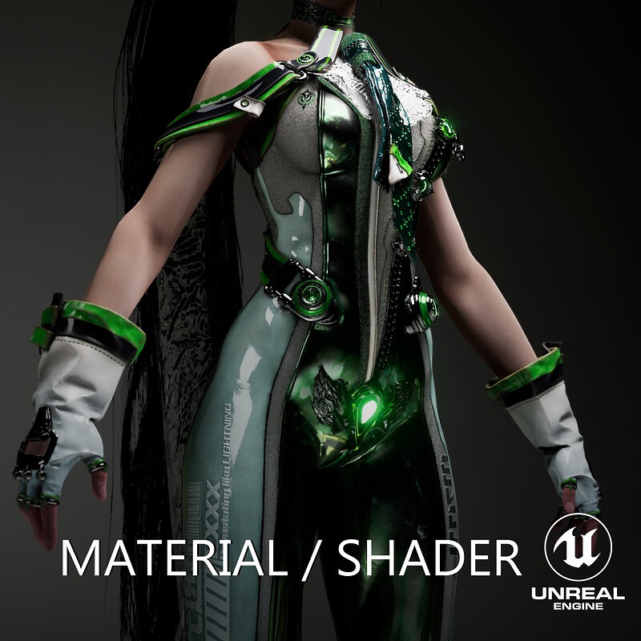
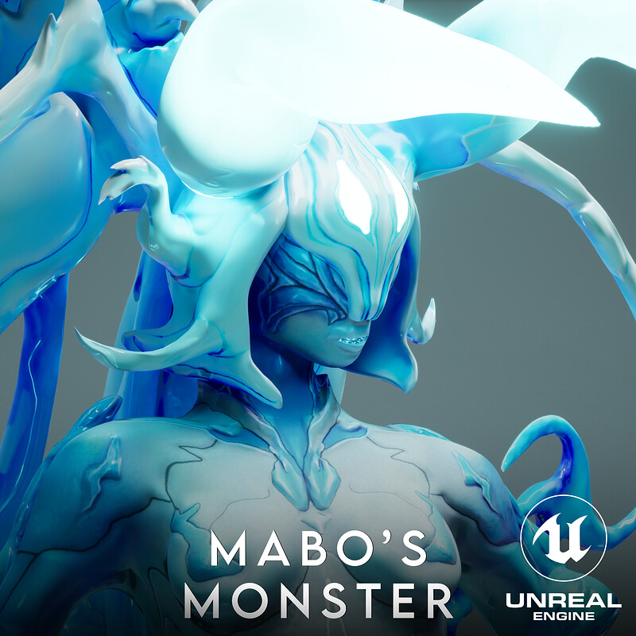
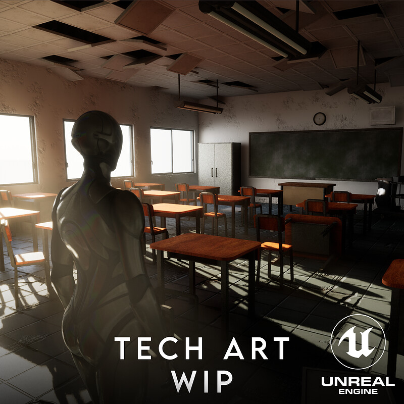
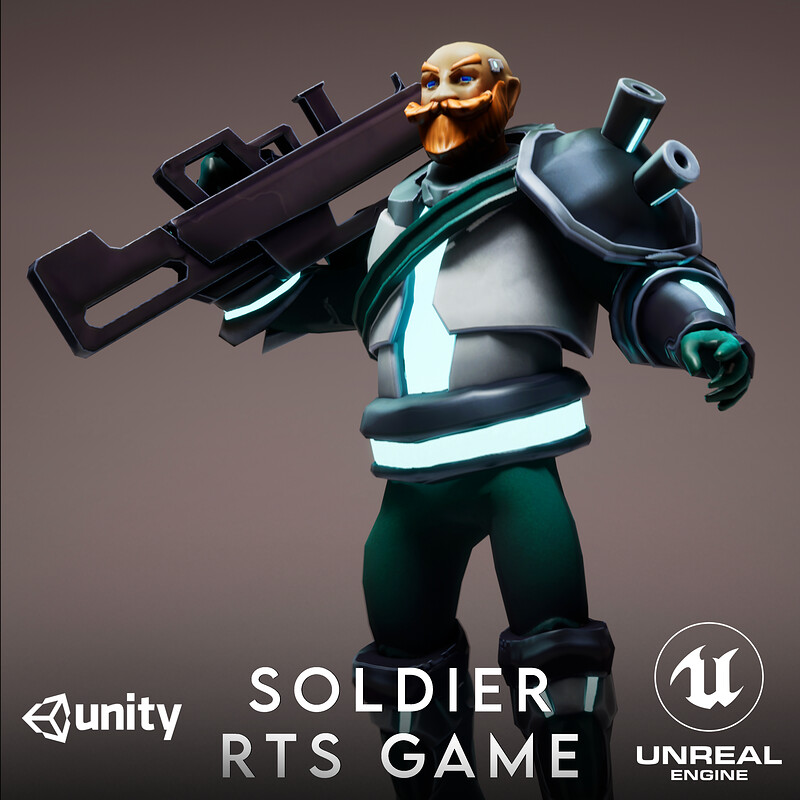
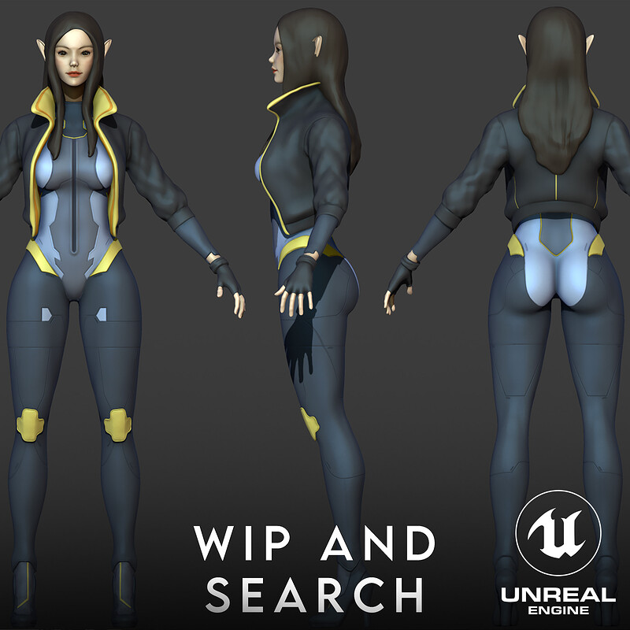

I build game systems and the worlds that hold them: from a full ARPG endgame grown inside a AAA title to procedural ruined cities measured gate by gate.
A PoE-style endgame loop built inside Stellar Blade: native contract missions, procedural loot with rolled affixes, ground drops and recycling, all driven by the game's own data systems.
A ~560 m organic ruined metropolis generated in UE 5.8, with district legibility, playable cover layouts, and 1300+ instances orchestrated by custom tooling.
An approach canyon designed like a level artist and verified like an engineer: line-of-sight coverage, threshold lighting, silhouette storytelling, every gate proven with numbers.
An agentic second brain that watches a project's notes, links its knowledge into a 3D graph, and improves its own code under a sacred verifier, with a local inner voice.
One corridor, one mood: an environment storytelling piece set in an overrun school: composition, hand-placed lighting, and props that tell the story.

View projectAn ongoing study rebuilding Eve's materials and shaders in Unreal Engine by pure interpretation, working from the game's textures with very little public information to lean on.

View projectA creature taken from a 2D concept (by mabo9317) to a full Unreal Engine render, with a step-by-step breakdown of the whole process.

View projectA long-running abandoned school environment used as a training ground: new techniques get tested, kept and improved here. The post-apo corridor piece above grows out of this sandbox.

View projectStudent project made in two months with a team of 12: the human unit and robots, taken from modeling all the way to functional in-game integration.

View projectResearch and iteration snapshots: a character sculpt, procedural dungeon generation and Gameplay Ability System experiments.
I'm NishiBishi, a technical artist who learns games by building inside them. My current playground is Stellar Blade, where I've been crafting an entire ARPG endgame as a mod, and a custom UE 5.8 world grown out of that work. I care about systems that prove themselves with numbers and environments that tell stories, and I build my own tools (procedural generators, agentic pipelines) to get there faster.